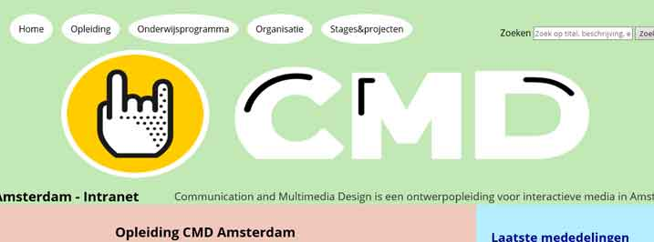
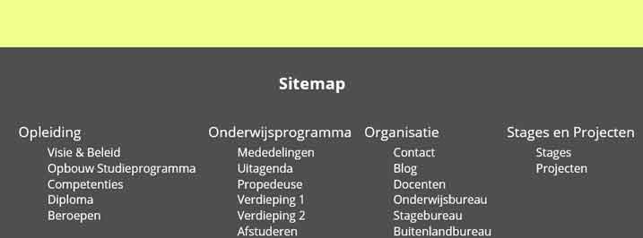

Responsiveness
Ik heb tijdens een project voor mijn opleiding mij verdiept in responsive websites. Hierbij vooral lettend op de minor en major breakpoints, dus niet alle focussen op de device groottes. Ook op de kleine veranderingen, dat de responsiveness netjes wordt. Je wilt namelijk wel een website kunnen maken die ook voor iedereen bruikbaar is. Je zou anders een grote groep mensen gelijk kunnen wegstrepen als klant, want die kunnen dan niet eens gebruik maken van de website.
Ik heb mij vooral bezig gehouden met Flexbox. Dit is een nieuwe lay-out methode. Met behulp van Flexbox kan er op een efficiëntere manier de lay-out, uitlijning en gebruikte ruimte rondom containers en elementen geregeld worden. Zelfs zonder de exacte breedte en hoogte te weten. Door deze nieuwe methode, wordt het responsive maken van website een stuk makkelijker.
Zelf heeft het mij wat tijd gekost om precies te snappen hoe het werkte en wanneer je de parent waardes meegeeft en wanneer de child. Na een paar keer wat proberen en doen, ben ik het helemaal gaan begrijpen. Ik heb uiteindelijk ook een kleine website vormgegeven met behulp van Flexbox. Deze website is qua vormgeving behoorlijk achtergesteld. Dit als reden omdat ik mij nu eigenlijk alleen op Flexbox wilde richten. Ik heb daarom grote vakken kleuren gegeven, om zo te kijken of het ook echt zou werken en de indeling zou veranderen.
Ik heb ook gebruik gemaakt van nieuwe HTML elementen, zoals het picture element. Dit element is vooral handig om de kwaliteit van de foto te behouden. Het picture element zorgt er eigenlijk voor, dat bij de juiste resolutie de juiste afbeelding wordt getoond. Zo voorkom je dat een afbeelding lang moet laden, slecht zichtbaar wordt of al je data opvreet op je mobiel.
Ik heb tijdens dit project veel geleerd. Zelf vind ik het erg jammer dat ik de vormgeving heb laten liggen. Daar had ik nog enorm kunnen uitpakken, maar ik ben blij dat ik toch mijn prioriteit heb gezet op Flexbox en het picture element. Ik heb dus veel geleerd en kan nu een correcte responsive website maken.
Mijn portfolio heb ik ook met behulp van Flexbox responsive gemaakt. Ik ben hier trotser op dan op de website van het project dat ik hier beschrijf. Dus wil je weten hoe ik responsive design heb toegepast? Verklein eens het scherm, of open de website eens op je mobiel.
Toch benieuwd hoe website eruit ziet en werkte van dit projectje? Bekijk hem maar eens, via de volgende link.